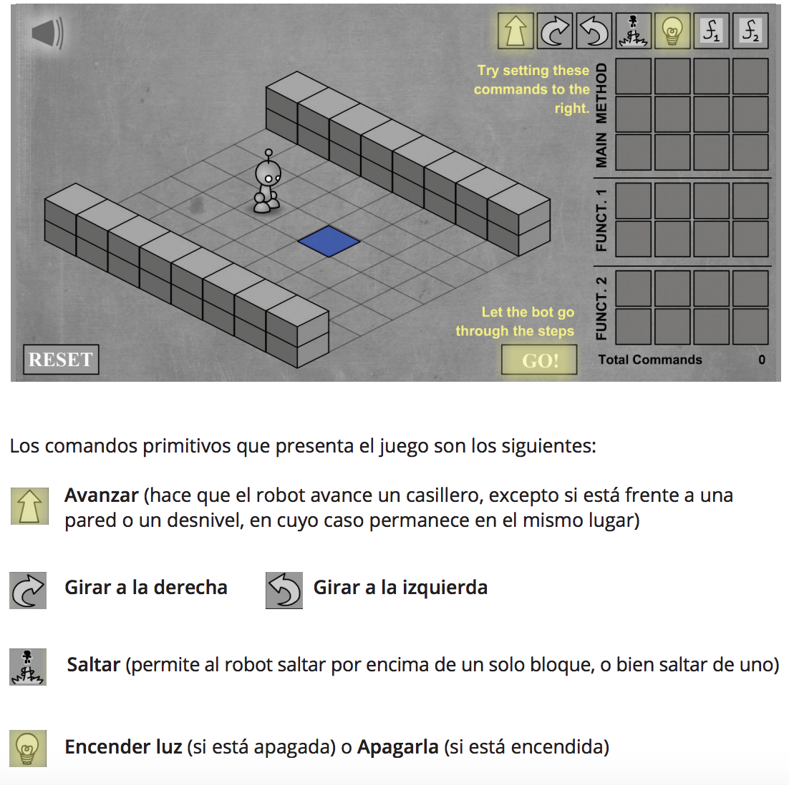

En esta parte se trabajará sobre algunas nociones elementales de programación. Al respecto, interesa destacar que un programa puede ser entendido como un conjunto de instrucciones (correspondientes a comandos) destinadas a ser ejecutadas por un autó- mata: la computadora. De manera más específica, estas instrucciones son descripciones de soluciones a problemas.
Programar implica, por lo tanto, delimitar problemas para poder luego formular las soluciones adecuadas. Para ello, se propone emplear una estrategia llamada división en subtareas, que consiste en dividir una acción en otras acciones más pequeñas, incluidas en aquella
En esta secuencia didáctica, se comenzarán a utilizar los bloques para resolver problemas. De este modo, frente a un problema determinado, habrá una secuencia de bloques que será una solución y otras secuencias que no lo serán. Para introducirse en el tema, se propone el trabajo con Lightbot, un videojuego de ingenio en el que los alumnos deberán programar la solución para que el autómata – en este caso, un robot – pase de un nivel al siguiente.
El objetivo es lograr en cada nivel que el robot logre prender la o las luces ubicadas en los cuadrados azules del piso. Para ello, el usuario cuenta con una serie de acciones en forma de íconos (similares a los bloques de Pilas Bloques) y una grilla en la que ubicarlas. El juego ofrece, además, la posibilidad de definir dos procedimientos (denominados funciones), aunque en los primeros niveles no es necesario utilizarlos.
• Inferir que los programas pueden resolver problemas específicos.
• Identificar problemas y proponer soluciones a través de la programación.
• Reconocer el patrón que permite descomponer un problema en acciones más acotadas.
• Resolver problemas de manera más simple a partir del patrón que permite descomponerlos.
• Proponer diversas soluciones para un mismo problema.

Acceso al sitio de trabajo
Grilla de Actividad